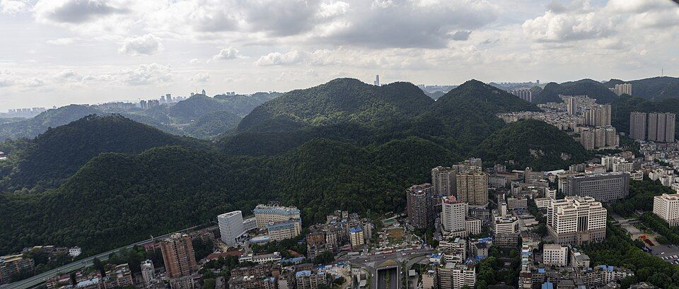
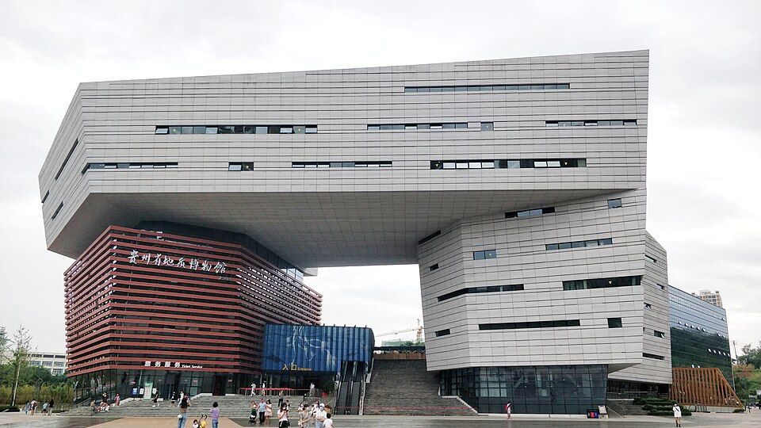
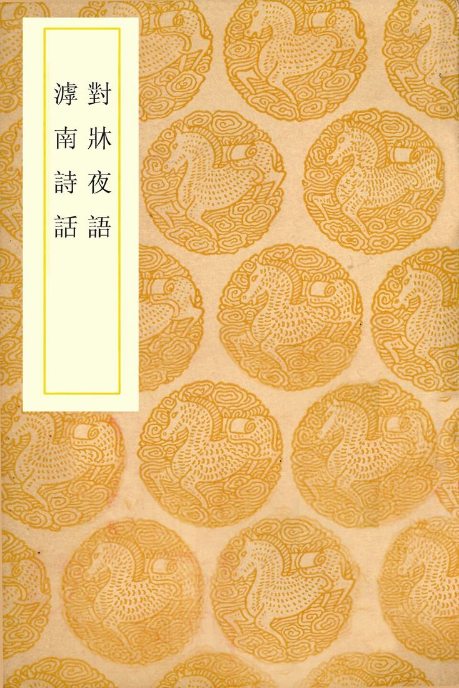
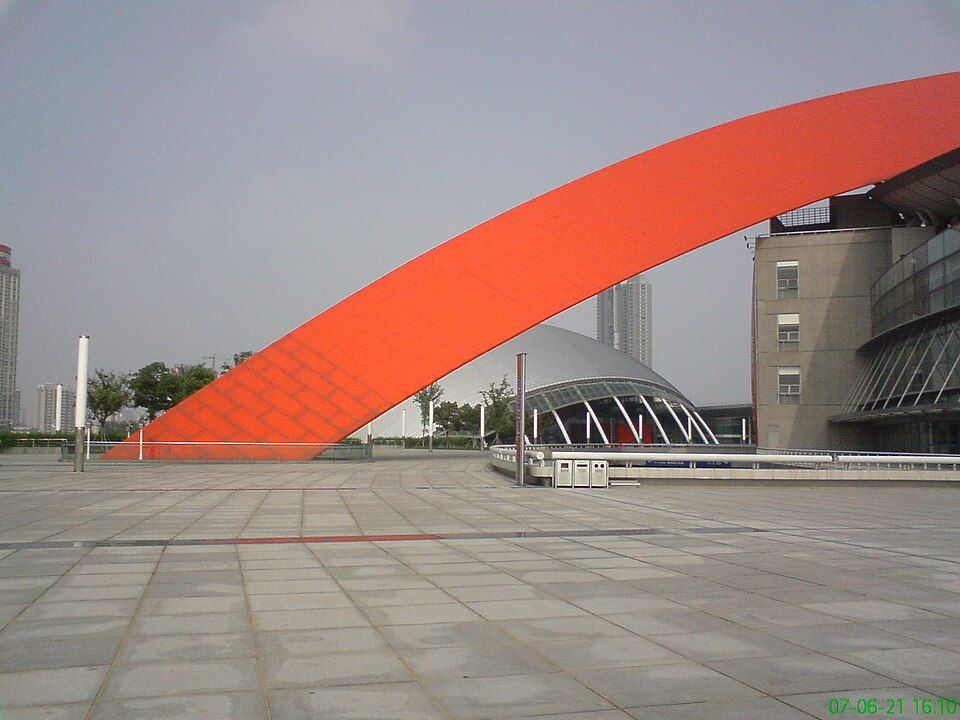
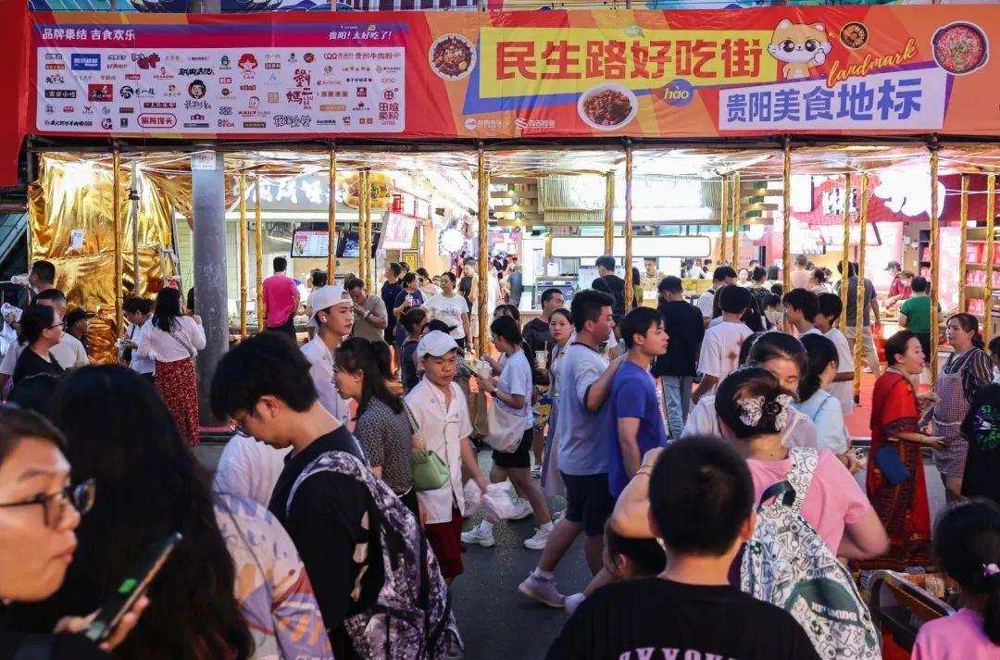
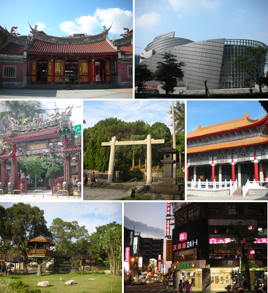
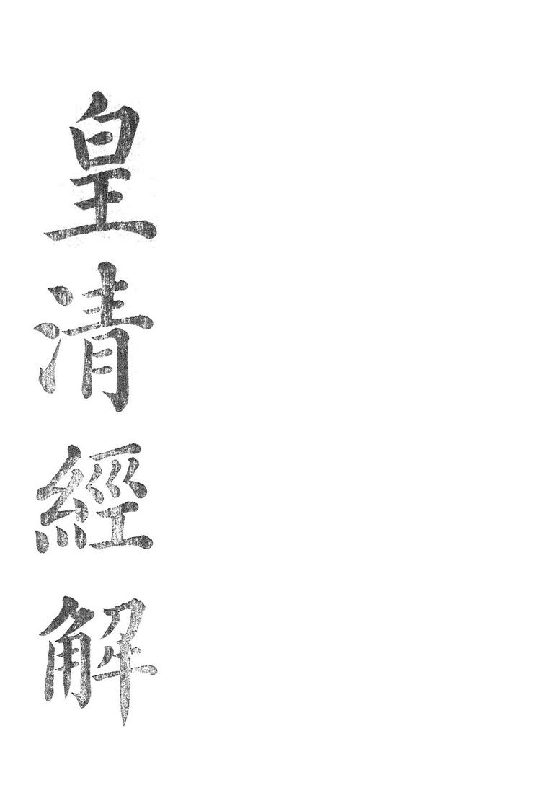
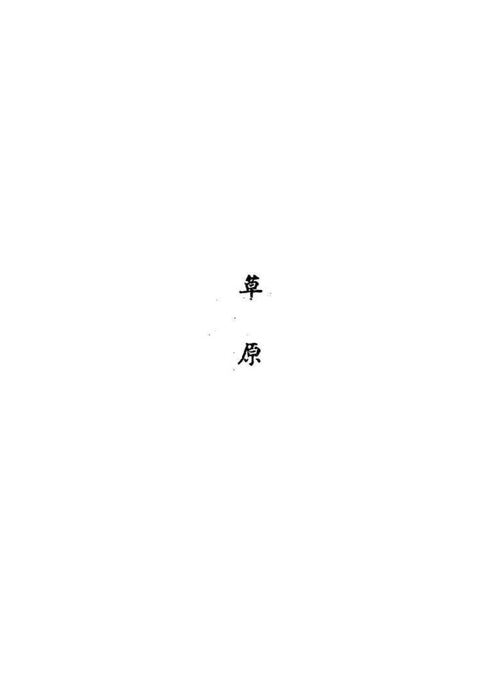
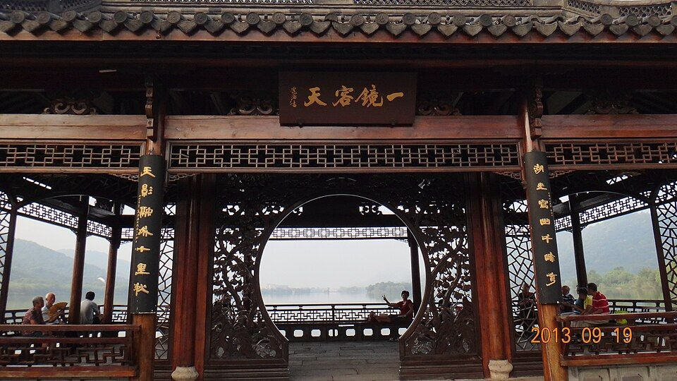

先看结论
-
贵阳适合的玩法
- 城市人文线甲秀楼、翠微园、文昌阁、阳明祠、达德学校旧址、南明河、筑城广场
- 城市山林线黔灵山公园、弘福寺、黔灵湖、麒麟洞、黔灵山动物园、观山湖公园、阿哈湖湿地公园
- 老城吃喝线民生路、正新街、蔡家街、文笔街、小十字、喷水池、青云市集、二七路小吃街
- 花溪慢游线花溪国家城市湿地公园、十里河滩、花溪公园、黄金大道、孔学堂、夜郎谷、青岩古镇
- 喀斯特山水线天河潭、南江大峡谷、桃源河、红枫湖、高坡云顶草原、贵安樱花园
- 博物馆和雨天线贵州省博物馆、贵州省地质博物馆、贵州省民族博物馆、红飘带、贵州科技馆
- 亲子轻松线黔灵山公园、贵州省博物馆、贵州省地质博物馆、贵州森林野生动物园、多彩贵州城、极地海洋世界
-
必去优先级
- 第一梯队黔灵山公园、甲秀楼、青岩古镇、民生路/正新街/蔡家街、青云市集、贵州省博物馆、花溪湿地/十里河滩
- 第二梯队天河潭、夜郎谷、孔学堂、贵州省地质博物馆、文昌阁、阳明祠、达德学校旧址、观山湖公园
- 时间多再去南江大峡谷、桃源河、红枫湖、贵安樱花园、高坡云顶草原、息烽集中营、阳明文化园、红飘带
- 亲子优先黔灵山大熊猫馆/动物园、贵州省博物馆、贵州省地质博物馆、贵州森林野生动物园、极地海洋世界
-
平台高频玩法
- 小红书风格黔灵山猴子和熊猫、甲秀楼夜景、青云市集夜拍、民生路小吃、青岩古镇状元蹄、花溪黄金大道、贵安樱花园
- B 站 Vlog 风格老城区吃一整天、黔灵山半日、贵州省博物馆、花溪骑行、青岩古镇、天河潭、南江大峡谷漂流
- 抖音路线风格甲秀楼夜景、青云市集、花果园白宫外观、黔灵山公园、民生路好吃街、正新街、青岩古镇、贵安樱花
-
游玩原则
- 贵阳的核心是“城市山林 + 老城烟火 + 贵州风味 + 周边山水”，不要只把它当作中转站
- 市区内优先用地铁和打车，远郊如南江大峡谷、桃源河、高坡、红枫湖更适合自驾、包车或跟一日游
- 夏季是避暑高峰，酒店和热门餐厅排队明显；春季赏花、秋季黄金大道也要看实时花情和交通管制
- 黔灵山不要投喂或挑逗猕猴，青岩古镇别只在主街买吃的，老城美食要分散到民生路、正新街、蔡家街、文笔街一起吃
- 贵阳“酸、辣、折耳根、蘸水”存在口味门槛，点餐时提前说是否要折耳根、要多辣
快速决策索引
全年月份速查
季节限定景观
景点营业时间和票价速查
-
黔灵山公园
- 时间公园通常白天到晚间开放，热门时段以官方预约入口显示为准
- 票价免费预约入园；弘福寺、索道、游船、动物园/熊猫馆等项目以现场为准
- 提醒2026 年起预约入口有调整，出发前看“黔灵山公园”官方公众号或贵客荟
-
甲秀楼、翠微园
- 时间常规为周二至周日 9:00-18:00，周一闭馆，节假日可能调整
- 票价免费
- 提醒夜景可在外部看，入楼参观看现场公告
-
文昌阁
- 时间常规为周二至周日 9:00-18:00，周一闭馆
- 票价免费
- 提醒适合和阳明祠、东山寺、老城小吃串联
-
阳明祠
- 时间常规为周二至周日 9:00-18:00，周一闭馆
- 票价免费
- 提醒心学主题，适合慢看，不适合只打卡外观
-
贵阳达德学校旧址
- 时间常规为周二至周日 9:00-18:00，周一闭馆
- 票价免费
- 提醒和甲秀楼、南明河、老城吃喝顺路
-
贵州省博物馆
- 时间周二至周日 9:00-17:00，16:00 停止入馆，周一闭馆，节假日除外
- 票价免费预约
- 提醒观山湖片区，适合雨天和亲子
-
贵州省地质博物馆
- 时间周二至周日 9:00-17:00，16:00 停止入馆，周一闭馆，节假日以公告为准
- 票价免费预约
- 提醒贵州喀斯特、古生物、矿产主题，和省博可同日安排
-
贵州省民族博物馆
- 时间通常周二至周日开放，周一闭馆，具体以官方公告为准
- 票价通常免费
- 提醒适合补贵州民族服饰、蜡染、银饰和节庆文化背景
-
青岩古镇
- 时间常规约 8:30-17:00
- 票价首道门票约 10 元；套票约 60 元，具体项目和优惠以景区售票为准
- 提醒夜间活动、沉浸式项目、节假日巡游可能另行收费
-
天河潭旅游度假区
- 时间旺季约 8:30-18:00，淡季约 9:00-17:00，售票提前停止
- 票价外景首道门票约 10 元；溶洞、游船、观光车、夜游/演艺另计
- 提醒S1 线可到天河潭站，项目组合复杂，买票前看清包含内容
-
花溪国家城市湿地公园、十里河滩
- 时间开放式公园，全天或按园区管理开放
- 票价开放式/免费，骑行、游船、停车等以现场为准
- 提醒适合春秋骑行和散步，雨后木栈道注意防滑
-
花溪公园、黄金大道
- 时间开放式游览为主，具体园门以现场为准
- 票价多数公共游览免费或低价，部分园中园/项目以现场为准
- 提醒黄金大道是秋季限定，停车和人流压力大
-
孔学堂
- 时间通常 9:00-17:00，活动区和展馆以公告为准
- 票价多为免费参观，讲座、活动、展览以预约为准
- 提醒适合和花溪湿地、十里河滩搭配
-
花溪夜郎谷
- 时间常见 8:30-19:00/19:30，部分入口或售票时段以现场为准
- 票价成人票常见约 20 元，学生/老人等优惠以景区为准
- 提醒艺术石堡和喀斯特地貌很出片，但路面不算精致
-
红飘带长征数字科技艺术馆
- 时间常见周二至周日 10:00-18:00，周一闭馆或下午开放以票务系统为准
- 票价演艺票按项目售卖，常见伟大征程成人票约 208 元，飞越项目约 80 元，联票约 268 元
- 提醒场次制体验，迟到可能无法进场，适合雨天和红色研学
-
多彩贵州城
- 时间开放式商业文旅片区，项目以店铺/场馆为准
- 票价街区免费，演艺、海洋馆、游乐项目另计
- 提醒靠近机场，适合航班前后或亲子雨天
-
青云市集
- 时间开放式街区，餐饮和店铺多为午后到夜间更热闹
- 票价开放式/免费，以店铺消费为准
- 提醒夜间氛围强，热门餐饮排队，拍照注意人流
-
民生路、正新街、蔡家街、文笔街
- 时间开放式老城街区，以店铺和摊位为准，下午到夜间更热闹
- 票价开放式/免费，以餐饮消费为准
- 提醒适合步行串吃，周末和节假日人挤人
-
二七路小吃街
- 时间开放式美食街，以店铺和摊位为准
- 票价开放式/免费，以餐饮消费为准
- 提醒靠近贵阳站，适合到站/离站顺路，不建议为它单独跨城跑
-
观山湖公园
- 时间开放式公园，通常全天或按公园管理开放
- 票价免费
- 提醒适合住观山湖时散步，和省博、省地质博物馆顺路
-
阿哈湖国家湿地公园
- 时间开放式湿地公园，具体入口以现场管理为准
- 票价免费或低价公共游览，项目以现场为准
- 提醒适合骑行、跑步、看湖景，不适合雨后泥路
-
贵安樱花园
- 时间樱花季按临时保障政策开放
- 票价近年非景区化免费开放，摆渡车/停车/消费以当年公告为准
- 提醒每年 3 月交通政策变化很大，必须复核官方通告
-
高坡云顶草原
- 时间乡村/草场类点位，营地、花海、骑马等项目以现场为准
- 票价开放式点位和经营项目并存，具体以现场为准
- 提醒适合自驾看日落和草甸，天气不好体验会打折
-
南江大峡谷
- 时间常见 8:30-17:30，节假日和漂流季可能延长
- 票价门票和观光车常见 65-90 元区间，漂流另计或套票，按季节浮动
- 提醒漂流项目受水位、天气影响大
-
桃源河
- 时间常见 8:30-18:00，漂流季以景区公告为准
- 票价门票/玻璃桥/漂流/观光车等组合收费，以官方票务为准
- 提醒夏季玩水强，非漂流季吸引力下降
-
红枫湖、时光贵州
- 时间红枫湖景区和游船以现场为准；时光贵州开放式街区以店铺为准
- 票价红枫湖游船/景区项目另计；时光贵州街区免费
- 提醒更适合自驾和秋季湖景，不是市区必去
-
息烽集中营革命历史纪念馆
- 时间常见 8:30-16:30，每月特定周一或节假日可能调整
- 票价多为免费预约
- 提醒红色教育属性强，适合和息烽温泉同日
-
阳明文化园、阳明洞
- 时间通常白天开放，具体以修文当地公告为准
- 票价多为免费或低价，讲解/展馆以现场为准
- 提醒适合对王阳明心学有兴趣的人，不建议只为拍照专程去
-
贵州森林野生动物园
- 时间常见 8:30-17:30 或 9:00-18:00，节假日可能调整
- 票价成人票常见约 120 元，儿童/老人优惠票约 60 元
- 提醒在修文扎佐，路程不短，亲子优先
行前准备
-
证件和预约
- 身份证
- 黔灵山公园预约
- 贵州省博物馆预约
- 贵州省地质博物馆预约
- 红飘带场次票
- 青岩古镇/天河潭/夜郎谷票务
- 贵安樱花季交通和摆渡政策
-
衣物
- 春秋薄外套、雨伞、防滑鞋
- 夏季轻薄外套、防晒、伞、速干衣
- 冬季防风外套、保暖内搭，贵阳湿冷比温度数字更明显
- 户外防滑鞋、备用袜子、雨衣
-
健康和口味
- 折耳根默认出现频率高，不吃要提前说
- 辣度不稳定，点菜说清楚微辣/不辣
- 酸汤、辣椒、蘸水、糯米类很多，肠胃敏感不要一天吃太杂
-
实时复核
- 景区开放和闭馆
- 漂流/峡谷安全公告
- 樱花、黄金大道、杜鹃花期
- 远郊交通管制
- 博物馆预约余量
- 热门餐饮排队和临时停业
住宿建议
-
喷水池、小十字、甲秀楼、民生路片区
- 适合第一次来、以老城吃喝和夜景为主
- 优点吃喝密集，去甲秀楼、文昌阁、青云市集方便
- 缺点老城区道路窄，停车麻烦，部分酒店较旧
- 推荐玩法甲秀楼夜景、民生路/正新街/蔡家街、青云市集、黔灵山
-
观山湖、贵阳北站片区
- 适合高铁到达、亲子、博物馆、商务型住宿
- 优点酒店新，去贵州省博物馆、地质博物馆、观山湖公园方便
- 缺点老城烟火感弱，晚上吃小吃需要打车或地铁
- 推荐玩法省博、地质博物馆、观山湖公园、北站进出
-
花溪、贵大、青岩方向
- 适合花溪湿地、青岩古镇、天河潭、夜郎谷、骑行慢游
- 优点自然感更强，周边大学和小吃多
- 缺点离老城区和北站较远，晚归要算车程
- 推荐玩法十里河滩、孔学堂、夜郎谷、青岩古镇、天河潭
-
龙洞堡机场、多彩贵州城片区
- 适合早晚航班、红飘带、多彩贵州城、机场中转
- 优点机场方便，亲子项目和红飘带顺路
- 缺点离老城美食和花溪都不算近
- 推荐玩法红飘带、多彩贵州城、机场前后半日
-
青岩古镇内外
- 适合想看古镇清晨夜晚、慢住、摄影
- 优点游客散去后更安静
- 缺点餐饮选择不如市区，拖箱走石板路不舒服
- 推荐玩法青岩古镇、花溪、天河潭
地图分区
-
老城核心区
- 核心点甲秀楼、翠微园、文昌阁、阳明祠、达德学校旧址、筑城广场、南明河、民生路、正新街、蔡家街
- 关键词历史地标、夜景、老城小吃、Citywalk
- 适合安排半天到 1 天
-
黔灵山和云岩区
- 核心点黔灵山公园、弘福寺、黔灵湖、麒麟洞、黔灵山动物园、北京路、喷水池
- 关键词城市山林、猴子、熊猫、登山、轻徒步
- 适合安排半天
-
青云路和南明区夜生活
- 核心点青云市集、青云路步行街、二七路小吃街、花果园白宫外观、太平路/曹状元街
- 关键词夜市、潮流街区、拍照、年轻人
- 适合安排傍晚到夜间
-
观山湖区
- 核心点贵州省博物馆、贵州省地质博物馆、观山湖公园、贵阳国际会议展览中心、金融城
- 关键词新城、博物馆、亲子、商务住宿
- 适合安排雨天半天到 1 天
-
花溪区
- 核心点花溪湿地、十里河滩、花溪公园、黄金大道、孔学堂、贵州大学、夜郎谷、青岩古镇
- 关键词湿地、骑行、秋色、古镇、艺术石堡
- 适合安排1 天
-
贵安和清镇方向
- 核心点贵安樱花园、贵州梅园、红枫湖、时光贵州
- 关键词春季赏花、湖景、自驾
- 适合安排半天到 1 天
-
开阳、修文、息烽远郊
- 核心点南江大峡谷、桃源河、息烽集中营、息烽温泉、阳明文化园、贵州森林野生动物园
- 关键词峡谷、漂流、温泉、红色教育、亲子
- 适合安排1 天
核心景点
-

开放图库 黔灵山公园游玩攻略最佳时间：清晨或工作日上午；看点：城中山林、弘福寺、黔灵湖、猕猴、熊猫馆、麒麟洞、登高看城- 最佳时间清晨或工作日上午
- 看点城中山林、弘福寺、黔灵湖、猕猴、熊猫馆、麒麟洞、登高看城
- 搭配路线黔灵山公园、喷水池、民生路、甲秀楼夜景
- 是否值得专程去第一次来贵阳很值得
- 提醒不要投喂猕猴，不要拿塑料袋晃，不要让小孩单独靠近猴群
-
甲秀楼和南明河
- 最佳时间傍晚到夜晚
- 看点贵阳地标、南明河夜景、翠微园、浮玉桥
- 搭配路线达德学校旧址、甲秀楼、翠微园、南明河、青云市集
- 是否值得专程去值得，尤其适合第一晚
- 提醒夜景外观比白天更有氛围，入楼看开放公告
-
文昌阁、阳明祠、达德学校旧址
- 最佳时间上午或下午
- 看点老城文物、心学文化、近现代教育和城市历史
- 搭配路线文昌阁、阳明祠、蔡家街、民生路、甲秀楼
- 是否值得专程去喜欢历史人文值得；纯拍照可顺路
- 提醒多为周一闭馆
-

开放图库 贵州省博物馆游玩攻略最佳时间：雨天、炎热午后、亲子半日；看点：民族贵州、历史贵州、古生物王国、贵州龙、民族服饰和银饰- 最佳时间雨天、炎热午后、亲子半日
- 看点民族贵州、历史贵州、古生物王国、贵州龙、民族服饰和银饰
- 搭配路线贵州省博物馆、贵州省地质博物馆、观山湖公园
- 是否值得专程去很值得，是理解贵州的入口
- 提醒提前预约，热门展和节假日人多
-

开放图库 贵州省地质博物馆游玩攻略最佳时间：省博同日或雨天；看点：喀斯特地貌、古生物、矿产、洞穴与地质知识- 最佳时间省博同日或雨天
- 看点喀斯特地貌、古生物、矿产、洞穴与地质知识
- 搭配路线贵州省博物馆、地质博物馆、观山湖公园
- 是否值得专程去亲子和地理爱好者值得
- 提醒闭馆较早，别下午太晚去
-

来源图 青岩古镇游玩攻略最佳时间：上午早点或傍晚；看点：明清古镇、城墙、背街、赵以炯状元故居、状元蹄、玫瑰糖- 最佳时间上午早点或傍晚
- 看点明清古镇、城墙、背街、赵以炯状元故居、状元蹄、玫瑰糖
- 搭配路线花溪湿地、孔学堂、青岩古镇；或天河潭、青岩古镇
- 是否值得专程去第一次来贵阳值得
- 提醒主街商业化，背街和城墙更有味道；猪脚别只看网红排队
-
花溪国家城市湿地公园、十里河滩
- 最佳时间春秋上午或傍晚
- 看点湿地、河滩、骑行、贵州大学周边、黄金大道
- 搭配路线花溪公园、十里河滩、孔学堂、花溪牛肉粉
- 是否值得专程去想慢逛和骑行值得
- 提醒夏季午后晒，雨后步道滑
-
孔学堂
- 最佳时间花溪同日
- 看点传统文化建筑、讲座活动、湿地边散步
- 搭配路线十里河滩、孔学堂、花溪公园、黄金大道
- 是否值得专程去文化兴趣者值得；一般游客顺路即可
- 提醒看展和活动要查排期
-

开放图库 花溪夜郎谷游玩攻略最佳时间：晴天下午或傍晚前；看点：宋培伦艺术石堡、夜郎图腾、喀斯特谷地、怪石拍照- 最佳时间晴天下午或傍晚前
- 看点宋培伦艺术石堡、夜郎图腾、喀斯特谷地、怪石拍照
- 搭配路线夜郎谷、花溪大学城、青岩古镇
- 是否值得专程去喜欢奇幻艺术和拍照值得
- 提醒不是传统精修景区，审美两极分化
-
天河潭
- 最佳时间5-9 月丰水期，晴天更好
- 看点溶洞、水洞、旱洞、瀑布、喀斯特山水、夜间活动
- 搭配路线天河潭、青岩古镇；或天河潭、花溪湿地
- 是否值得专程去想看贵阳近郊山水值得
- 提醒票种组合复杂，买前看清是否含洞船和交通
-

开放图库 红飘带游玩攻略最佳时间：雨天、亲子、红色研学；看点：长征主题数字演艺、沉浸式观演、科技体验- 最佳时间雨天、亲子、红色研学
- 看点长征主题数字演艺、沉浸式观演、科技体验
- 搭配路线红飘带、多彩贵州城、机场
- 是否值得专程去对沉浸演艺和红色文化感兴趣值得
- 提醒场次制，不能迟到
-
青云市集
- 最佳时间傍晚到夜间
- 看点夜市、美食、酒吧、文创、年轻化街区、灯光氛围
- 搭配路线甲秀楼夜景、青云市集、二七路或花果园外观
- 是否值得专程去晚上值得
- 提醒适合氛围和小吃，不适合追求安静
-

来源图 民生路、正新街、蔡家街游玩攻略最佳时间：下午到夜间；看点：锅巴糍粑、洋芋粑、烤豆腐、裹卷、破酥包、糯米饭、冰浆、特产- 最佳时间下午到夜间
- 看点锅巴糍粑、洋芋粑、烤豆腐、裹卷、破酥包、糯米饭、冰浆、特产
- 搭配路线文昌阁、阳明祠、民生路、蔡家街、甲秀楼
- 是否值得专程去吃货必去
- 提醒热门店排队，少量多样吃，不要一上来就吃撑
街区、夜市和市场
-
来源图 民生路好吃街游玩攻略适合时间：下午到夜间；提醒：人多时动线拥挤，建议从正新街、蔡家街一起串- 定位老城核心美食街
- 吃什么洋芋片、烤豆腐、糯米饭、裹卷、冰浆、豆腐圆子、特产
- 适合时间下午到夜间
- 提醒人多时动线拥挤，建议从正新街、蔡家街一起串
-
正新街
- 定位街头小吃和本地排队摊
- 吃什么锅巴糍粑、烤馒头、脆皮洋芋粑、土豆片、恋爱豆腐果
- 适合时间下午到晚上
- 提醒摊位变化快，以现场和地图为准
-
蔡家街
- 定位老城烟火街区
- 吃什么小吃、粉面、豆腐圆子、甜品、烧烤、老字号
- 适合时间午后到夜间
- 提醒街巷窄，适合步行
-
文笔街、曹状元街、太平路
- 定位老城更新街区、咖啡、轻餐、文创
- 吃什么咖啡、甜品、轻食、创意小吃
- 适合时间下午到夜间
- 提醒更适合散步拍照，不要替代正餐
-
青云市集
- 定位夜间消费和潮流街区
- 吃什么烙锅、烧烤、冰浆、精酿、贵州小吃、文创
- 适合时间晚饭后到夜间
- 提醒更偏年轻化和游客化，价格比老街小摊略高
-
二七路小吃街
- 定位贵阳站附近的一站式小吃街
- 吃什么贵州各地小吃、酸汤粉、豆腐、洋芋、烧烤
- 适合时间到站/离站顺路
- 提醒如果已经吃了民生路和青云市集，可不专程去
-
花溪十字街和贵大周边
- 定位学生街、花溪本地小吃
- 吃什么花溪牛肉粉、烙锅、炸洋芋、甜品、奶茶
- 适合时间花溪线中午或晚餐
- 提醒店铺分散，用地图搜评分和营业状态
-
青岩古镇主街和背街
- 定位古镇小吃和伴手礼
- 吃什么状元蹄、豆腐圆子、玫瑰糖、糕粑稀饭、米豆腐、卤味
- 适合时间午餐到下午茶
- 提醒主街游客价明显，背街更适合慢逛
-
农贸市场和本地菜市
- 推荐类型老城菜市、花溪菜市、民生路原市场改造区、社区早市
- 买什么辣椒面、糟辣椒、酸汤料、折耳根、糍粑、糯米饭、豆腐制品
- 提醒早市更有生活感，但卫生和包装不如商超
美食总表
-
贵阳特色菜
- 酸汤鱼
- 酸汤牛肉
- 豆米火锅
- 贵阳辣子鸡
- 糟辣脆皮鱼
- 宫保鸡丁黔味版本
- 盗汗鸡
- 青岩状元蹄
- 贵州烙锅
- 夺夺粉
-
粉面主食
- 肠旺面
- 花溪牛肉粉
- 羊肉粉
- 素粉
- 辣鸡粉
- 糯米饭
- 破酥包
- 糕粑稀饭
-
小吃
- 丝娃娃
- 恋爱豆腐果
- 豆腐圆子
- 裹卷
- 洋芋粑
- 炸洋芋片
- 锅巴糍粑
- 米豆腐
- 清明粑
- 烤小豆腐
- 烤馒头
-
甜品和饮品
- 冰浆
- 玫瑰冰粉
- 刺梨汁
- 酸梅汤
- 甜酒粑
- 贵州茶饮
- 本地咖啡和精酿
-
夜市优先
- 烙锅
- 烧烤
- 洋芋
- 豆腐
- 冰浆
- 精酿
- 小龙虾/烤鱼类
-
伴手礼
- 青岩玫瑰糖
- 辣椒面/蘸水
- 贵州酸汤料
- 刺梨制品
- 贵阳三脆
- 贵州酱香酥
- 豆腐干
- 茶叶
- 苗药膏贴类产品
- 蜡染/银饰文创
餐厅和店铺
-
酸汤鱼/酸汤牛肉
- 老凯俚酸汤鱼游客和本地都常见的黔菜选择，适合第一次吃酸汤
- 贵厨酸汤牛肉适合想吃酸汤牛肉和黔菜的人
- 新凯里酸汤鱼类店铺贵阳分店多，按就近评分选
- 点单建议酸汤鱼、酸汤牛肉、米豆腐、折耳根炒腊肉、蘸水蔬菜
-
丝娃娃
- 丝恋红汤丝娃娃连锁稳定，适合第一次尝试
- 杨姨妈丝娃娃/老字号丝娃娃类店看具体门店营业状态
- 点单建议丝娃娃、脆哨、冰粉、豆腐圆子
-
肠旺面
- 金牌罗记肠旺面贵阳高频老字号
- 南门口肠旺面类老店可按住宿附近地图评分选择
- 点单建议肠旺面、加脆哨、少辣或正常辣
-
花溪牛肉粉
- 王记花溪牛肉粉类老店花溪线顺路吃
- 飞碗牛肉粉类门店适合早餐或午餐
- 点单建议牛肉粉、加肉、酸萝卜、辣椒单独放
-
豆米火锅
- 新大新豆米火锅贵阳豆米火锅代表之一
- 本地社区豆米火锅店更接地气，环境不一定精致
- 点单建议豆米锅、软哨、脆哨、豆腐、蔬菜、洋芋
-
烙锅和夜宵
- 青云市集烙锅店氛围好，适合夜间
- 花溪/贵大周边烙锅学生价更友好
- 点单建议洋芋、豆腐、五花肉、鸡皮、牛肉、蘸水
-
来源图 青岩古镇出名店铺 / 吃法王万妈卤猪脚类店：青岩状元蹄代表；金必轩类猪脚/糕粑稀饭店：适合古镇中午吃- 王万妈卤猪脚类店青岩状元蹄代表
- 金必轩类猪脚/糕粑稀饭店适合古镇中午吃
- 玫瑰糖店买小包装试味，不要冲动大包
-
小吃和伴手礼
- 雷家豆腐圆子贵阳老小吃代表
- 但家香酥鸭适合买半只或小份尝试
- 民生路好吃街一站式试洋芋、豆腐、糯米饭、冰浆
- 正新街摊位适合锅巴糍粑、脆皮洋芋粑、烤馒头
-
饮品和甜品
- 冰浆店优先老城、青云市集、花溪学生街
- 刺梨饮品酸甜醒口，适合解辣
- 本地咖啡太平路、曹状元街、花溪、观山湖有较多新店
- 提醒饮品店更新快，按“贵阳 冰浆/咖啡/刺梨”实时搜更准
博物馆和展馆
-
开放图库 贵州省博物馆游玩攻略搭配：贵州省地质博物馆、观山湖公园- 主题贵州历史、民族文化、古生物、非遗
- 适合第一次来贵州、亲子、雨天
- 搭配贵州省地质博物馆、观山湖公园
-
开放图库 贵州省地质博物馆游玩攻略搭配：贵州省博物馆、观山湖公园- 主题喀斯特、古生物、矿产、地质科普
- 适合亲子、地理爱好者、雨天
- 搭配贵州省博物馆、观山湖公园
-
贵州省民族博物馆
- 主题民族服饰、节庆、银饰、织染文化
- 适合想了解苗族、侗族、布依族等贵州民族文化的人
- 搭配甲秀楼、筑城广场、老城吃喝
-
贵州科技馆
- 主题科普互动
- 适合亲子和雨天
- 搭配筑城广场、甲秀楼、二七路
-
红飘带长征数字科技艺术馆
- 主题长征文化、数字演艺、沉浸式体验
- 适合红色研学、雨天、亲子
- 搭配多彩贵州城、龙洞堡机场
-
息烽集中营革命历史纪念馆
- 主题抗战时期红色遗址、革命历史教育
- 适合历史和红色教育
- 搭配息烽温泉、阳明文化园
-
阳明文化园、阳明洞
- 主题王阳明心学、龙场悟道
- 适合人文爱好者
- 搭配修文县城、贵州森林野生动物园
自然、远郊和周边
-
天河潭
- 适合喀斯特入门、半日远郊、亲子
- 强度低到中
- 最佳季节5-9 月
- 取舍如果时间只够一个远郊自然点，天河潭比南江大峡谷更省路程
-
南江大峡谷
- 适合峡谷、漂流、夏季玩水
- 强度中
- 最佳季节6-8 月
- 取舍比天河潭更户外，天气影响更大
-

开放图库 桃源河游玩攻略最佳季节：6-8 月- 适合漂流、玻璃桥、夏季亲水
- 强度中
- 最佳季节6-8 月
- 取舍漂流季更值得，非漂流季优先级下降
-

开放图库 红枫湖游玩攻略最佳季节：秋季和晴天- 适合湖景、自驾、清镇方向慢游
- 强度低
- 最佳季节秋季和晴天
- 取舍不是第一次来贵阳的必去，更适合自驾
-
来源图 贵安樱花园游玩攻略最佳季节：3 月中下旬- 适合春季赏花、航拍、花海
- 强度低到中，主要取决于交通
- 最佳季节3 月中下旬
- 取舍花期外不必专程
-

开放图库 高坡云顶草原游玩攻略最佳季节：4-10 月晴天- 适合日落、草甸、露营、乡村风景
- 强度中
- 最佳季节4-10 月晴天
- 取舍自驾体验远好于公共交通
-
阿哈湖国家湿地公园
- 适合市区湿地、骑行、跑步
- 强度低
- 最佳季节春秋
- 取舍住附近或想散步值得，时间紧可跳过
-

开放图库 观山湖公园游玩攻略最佳季节：春秋和傍晚- 适合新城散步、亲子、住观山湖
- 强度低
- 最佳季节春秋和傍晚
- 取舍不是强景点，但很适合放松
-
乌当温泉
- 适合冬季、雨天、夜间放松
- 强度低
- 最佳季节11 月到次年 2 月
- 取舍更像度假补充，不是观光必去
-
贵州森林野生动物园
- 适合亲子、动物爱好者
- 强度中
- 最佳季节春秋和晴天
- 取舍路程较远，只有亲子需求时优先
路线模板
远郊一日游决策
交通细节
-
到达贵阳
- 飞机贵阳龙洞堡国际机场，适合转多彩贵州城、红飘带、机场住宿
- 高铁贵阳北站最常用，贵阳东站离核心区更远，贵阳站适合老城和二七路
- 火车站取舍第一次来优先贵阳北或贵阳站，慎选贵阳东站附近住宿
-
市内交通
- 地铁贵阳已有 1 号线、2 号线、3 号线、S1 线，覆盖贵阳北、贵阳站、喷水池、黔灵山、花溪、天河潭等重要方向
- 打车老城短途方便，但晚高峰和雨天容易堵
- 公交可到青岩、花溪、黔灵山等点位，但行李多不建议折腾
- 骑行花溪、十里河滩、观山湖更适合，老城主干路不建议
-
机场到市区
- 到喷水池/老城地铁或打车
- 到观山湖/贵阳北地铁换乘或打车
- 到花溪/青岩距离较远，建议打车/包车/直通车
-
高铁站到市区
- 贵阳北站到喷水池地铁方便
- 贵阳北站到观山湖短途打车或地铁
- 贵阳东站到市区车程更长，提前预留时间
- 贵阳站到二七路/甲秀楼很近，适合顺路吃喝
-
去青岩古镇
- 公交/直通车/打车都可
- 从花溪方向更顺
- 节假日停车紧张，古镇外步行距离可能增加
-
去天河潭
- S1 线天河潭站是重要选择
- 自驾停车更自由
- 可与青岩、花溪合并，但别把时间压太紧
-
去贵安樱花园
- 樱花季看官方摆渡车、地铁接驳、停车场和预约政策
- 不建议只凭导航直接开到核心区
- 早出发比晚出发重要
-
去南江大峡谷/桃源河/高坡
- 自驾、包车、跟一日游更省心
- 雨季出发前看景区公告
- 山路和峡谷项目不要赶夜路
避坑和取舍
-
黔灵山
- 不要投喂猴子
- 不要用塑料袋、饮料、食物挑逗猴子
- 小孩和老人尽量走主路，猴群密集处保持距离
-
青岩古镇
- 不要只在主街买一堆重复伴手礼
- 状元蹄适合多人分食，单人点太多容易腻
- 想看古镇味道，走背街、城墙、支巷
-
民生路/正新街/蔡家街
- 不要一家吃饱，应该小份多样
- 注意辣度和折耳根
- 周末节假日排队长，错峰更舒服
-
青云市集
- 更适合夜间氛围和拍照，不是最便宜的小吃选择
- 酒吧和精酿消费前看清价格
-
花果园白宫
- 主要看外观和城市奇观，不建议为室内专程安排
- 拍照注意交通和人流，不要影响居民
-
贵安樱花园
- 花期外不要专程
- 樱花季交通管制比景点本身更影响体验
- 不能只看旧攻略，必须看当年公告
-
南江大峡谷/桃源河
- 雨天、暴雨后、涨水时不要硬去
- 漂流服装、手机防水、换洗衣服提前准备
- 老人小孩要评估体力和安全
-
住宿
- 老城吃喝方便但停车难
- 观山湖酒店新但夜市不如老城
- 花溪适合慢游，不适合每天来回老城赶行程
-
口味
- 折耳根、酸汤、糟辣、蘸水很有地域性，不习惯要提前说
- 贵阳小吃糯米和辣椒多，肠胃弱不要连续猛吃
出发前复核清单
来源参考
-
黔灵山公园免费开放、预约和游览信息
- https//www.guiyang.gov.cn/ztzl/yhjsms/yk/sygy/202408/t20240807_85336251.html
- https//gz.people.com.cn/n2/2026/0428/c371755-41565934.html
- https//gy.bendibao.com/tour/202056/49387.shtm
-
甲秀楼、文昌阁、阳明祠、达德学校旧址开放信息
- https//www.guiyang.gov.cn/zwgk/zwgkxwdt/zwgkxwdtjrgy/202510/t20251011_88684779.html
-
青岩古镇开放时间和门票
- https//gy.bendibao.com/tour/2023411/65209.shtm
- https//gy.bendibao.com/jingdian/qingyanguzhen/
-
天河潭旅游度假区
- https//jw.english.guiyang.gov.cn/2025-02/28/c_1073843.htm
-
贵州省博物馆、贵州省地质博物馆
- https//www.gzmuseum.com/
- https//tianzhu.gzstv.com/news/detail/zJexy/
- https//m.gy.bendibao.com/tour/55590.shtm
-
花溪夜郎谷、花溪湿地
- https//m.gy.bendibao.com/jingdian/huaxiyelanggushengtaiyuan/
- https//www.guiyang.gov.cn/ztzl/rdzt/ssgysjzc/qsp/qsp_lyzn/202307/t20230725_81258872.html
-
贵安樱花园和春季赏花
- https//finance.sina.com.cn/wm/2026-01-22/doc-inhiepsy1754980.shtml
- https//www.gywb.cn/pages/web/2026/03/04/4a4502ef4bd742f5b1b4bb6f1c52217e.html
- https//gy.bendibao.com/traffic/202635/78308.shtm
-
贵阳美食街区和夜间消费
- https//www.gywb.cn/pages/web/2024/08/21/3005f423a6b140fda3b928d959bd6953.html
- https//movement.gzstv.com/news/detail/lVY6v/
- https//gz.people.com.cn/n2/2024/0819/c396691-40948746.html
-
南江大峡谷、息烽集中营、红飘带、森林野生动物园
- https//gy.bendibao.com/jingdian/nanjiangdaxiagu/
- https//gy.bendibao.com/jingdian/xifengjizhongyingjiuzhi/
- https//m.gy.bendibao.com/tour/69055.shtm
- https//gy.bendibao.com/jingdian/guiyangyeshengdongwuyuan/
-
贵阳新十景和地铁交通
- https//m.gy.bendibao.com/tour/78549.shtm
- https//www.gywb.cn/pages/web/2026/05/06/27249c40faba49ca8c8827d92d1e6abe.html
- https//gy.bendibao.com/ditie/linemap.shtml
-
社媒玩法和路线参考
- 小红书关键词贵阳旅游攻略、贵阳美食、民生路、正新街、青云市集、黔灵山、青岩古镇、花溪黄金大道、贵安樱花园
- 抖音关键词贵阳三天两晚、贵阳夜市、甲秀楼夜景、黔灵山猴子、青云市集、花果园白宫、贵阳酸汤鱼
- 哔哩哔哩检索https://search.bilibili.com/all?keyword=%E8%B4%B5%E9%98%B3%20%E6%97%85%E6%B8%B8%E6%94%BB%E7%95%A5%20%E7%BE%8E%E9%A3%9F%20%E9%BB%94%E7%81%B5%E5%B1%B1%20%E9%9D%92%E5%B2%A9%E5%8F%A4%E9%95%87